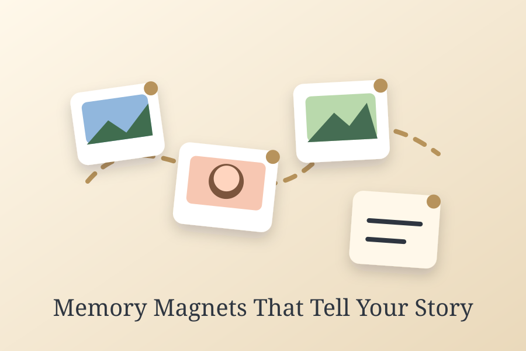

In our modern digital landscape, we capture thousands of photos that rarely see the light of day. We snap pictures of family gatherings, stunning sunsets, spontaneous road trips, and child milestones, only to let them sit in digital storage clouds or phone galleries. This digital isolation detaches us from the tangible memories that shape our lives. Investing in high-quality memory magnets offers a beautiful way to bring these hidden treasures back into our daily environment, turning our metallic surfaces into beautiful focal points of nostalgia and warmth.
The beauty of physical photographs lies in their tactile presence. Unlike scrolling through a social media feed, looking at a physical print evokes a stronger psychological connection. When you print your photos as memory magnets, you create interactive elements that family members can hold, move, and arrange. This physical interaction keeps the memories fresh and makes them a central topic of conversation when guests gather in your kitchen.

The Psychological Benefit of Visual Memory Anchors
Psychologists have long studied the positive effects of personal nostalgia on human happiness and emotional stability. Surrounding yourself with visual representations of your accomplishments, loved ones, and favorite experiences serves as a powerful mood booster. These visual memory anchors act as subconscious reminders of support and joy during stressful moments, helping to ground us and reduce daily anxiety.
A refrigerator adorned with memory magnets represents a visual journal of your life journey. Seeing a photo of a summer vacation, a wedding day, or a child's first step while making your morning coffee starts your day with positive emotions. For children, seeing their photos and artwork displayed prominently builds self-esteem and instills a deep sense of belonging within the family unit. It shows them that their experiences are valued and worth celebrating.
Designing the Perfect Magnetic Photo Gallery
Creating a beautiful display does not require professional interior design skills. A successful display blends different sizes, shapes, and colors to create a dynamic visual rhythm. Start by curating a theme for your memory magnets, such as a chronological timeline of family holidays, a collection of outdoor adventures, or a series of black and white portraits. Consistent borders and finishes help tie diverse photographs together for a premium, unified look.
If you prefer a structured appearance, arrange your magnets in clean grids with equal spacing. For a more casual, organic feel, mix rectangular prints with squares and circular cuts. You can easily pair these with our photo magnets collection to establish a solid foundation, allowing specialized pieces to stand out. The flexibility of magnets means you can change your layout at any time, adapting your kitchen gallery to fit your shifting moods and seasonal themes.
Selecting the Right Photos for High Impact
Not every photograph translates perfectly to a physical magnet. When choosing images, prioritize photos with clear focal points, vibrant colors, and balanced lighting. Close-up portraits and clean landscapes work exceptionally well, as they remain easily readable from a distance. Avoid photos that are cluttered with too many tiny details, as these can look busy when printed in smaller formats.
Candid photos often carry more emotional weight than stiff, posed portraits. The laughter shared during a family dinner or the messy face of a toddler eating cake makes for a far more engaging memory magnet than a formal school picture. Do not be afraid to print everyday moments alongside major milestones. Often, the small, spontaneous joys are the ones we cherish most in hindsight. If you want to customize your images with text overlays or specific layouts, you can explore our custom photo magnets design options.
Practicality Combined with Visual Elegance
Beyond their emotional value, memory magnets serve as highly practical organizational tools. They keep important papers, schedules, grocery lists, and school reminders securely attached to your refrigerator. Unlike generic office magnets that lack aesthetic appeal, premium custom magnets allow you to organize your life without sacrificing the beauty of your kitchen decor. They seamlessly combine fashion with daily utility.
When selecting your magnets, check the quality of the magnetic backing. Premium options utilize thick, flexible magnetic sheets or strong rare-earth magnets that hold multiple sheets of paper without sliding down the surface. This holding power is crucial for high-traffic kitchens where the refrigerator door is constantly opened and closed. If you want to complement your memories with decorative kitchen accents, you can explore our collection of premium fridge magnets designed for modern home styling.
The Ultimate Personalized Gift for Loved Ones
Finding a unique gift that is both meaningful and practical can be a challenge. Memory magnets solve this dilemma by offering a deeply personal product that the recipient will use every single day. For grandparents, a set of magnets featuring their grandchildren's recent milestones is a priceless gift that keeps them connected to family events. For newlyweds, a collection of wedding day photos printed on premium magnets lets them celebrate their union in their new home.
Because they are compact and lightweight, these magnets are easy to mail, making them perfect surprises for long-distance friends. Every time they reach for the refrigerator handle, they will be reminded of your shared experiences. It is a simple gesture that carries immense emotional weight, proving that the best gifts do not have to be expensive or oversized to make a lasting impression.
Conclusion
Memory magnets offer a simple, elegant, and highly personal way to bring your digital photos into your physical space. By turning your favorite moments into premium, durable decorations, you establish a warm environment that celebrates your life story daily. Whether you are decorating your kitchen, organizing your home office, or searching for the perfect personalized gift, memory magnets represent the ideal intersection of emotional value and practical function. Start printing your digital memories today and transform your metallic surfaces into beautiful galleries of joy.
Transform Your Memories Today
Browse our custom design options and start creating your memory magnets now.
Create Memory Magnets